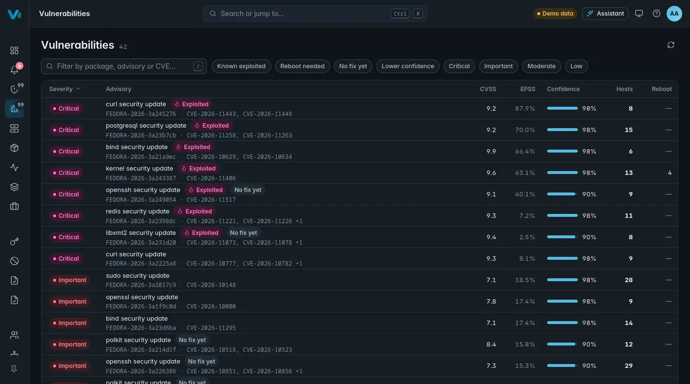
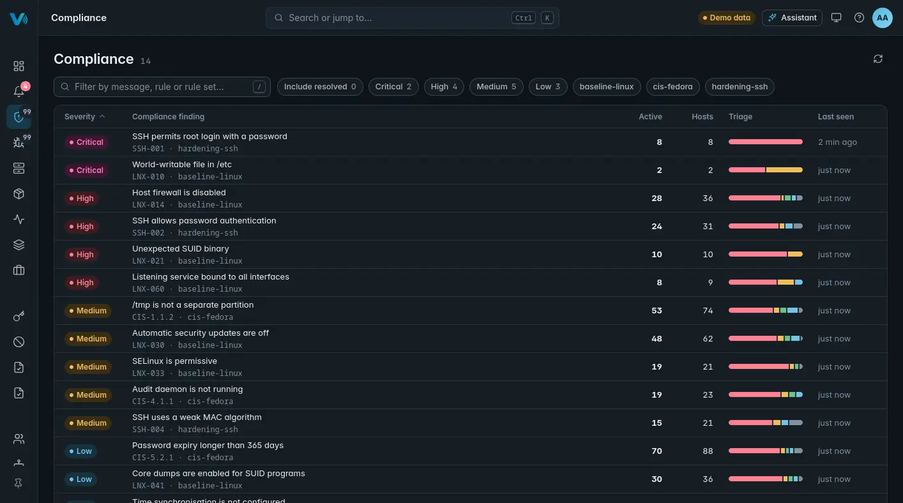
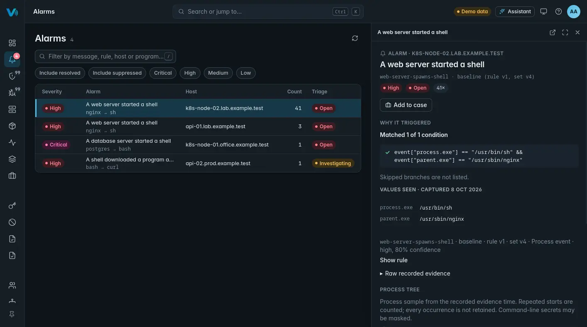
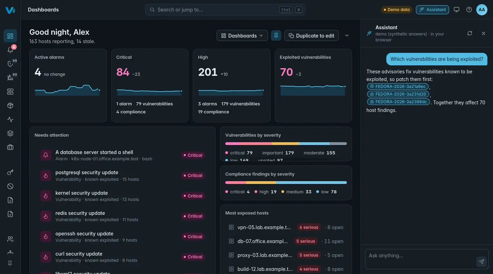

Four things, done properly
Know what's vulnerable
Every host reports its installed software. OpenVIBES matches it against the distributions' own security advisories and puts known-exploited vulnerabilities first.
- Fedora, Debian, Ubuntu, Rocky Linux and AlmaLinux advisories
- Software, open ports and services per host

Check your baseline
Signed compliance rules run on every host. The baseline flags services exposed to the network, such as the Docker API, Redis or a database, and risky servers like Telnet and rsh. Write your own rules and sign them on your platform.
- Baseline rules included
- Your own rules, your own signing key

Hear about threats in seconds
The agent watches every program start, with eBPF and kernel audit as the fallback. A web server starting a shell is in your console seconds later, with why the rule fired and the process tree.
- Built-in rules, e.g. a web or database server starting a shell
- Quiet by default; suppress what is normal for you
- Triage, cases and an audit trail

Ask in plain words
An optional assistant runs on your own platform. Ask what to fix first, which hosts are stale, or what a finding means.
- With the bundled model, nothing leaves your network
- Answers link to the hosts and findings they are about

Built for people who are tired of heavy security tools
Interface first
Fast, uncluttered screens that each answer a question.Light agent
A small Rust agent with a strict footprint budget.Quiet by default
Alerts on what matters; everything is tunable.Yours to shape
Your own rules, collection, noise and views.Your data stays yours
Self-hosted. No vendor cloud, no telemetry.No licence locks
Every feature is in the MIT-licensed project.An early release, moving fast
Runs on today
- Platform: Fedora 44 (x86_64)
- Agents: Fedora 44
- Vulnerability data for Fedora, Debian, Ubuntu, Rocky Linux and AlmaLinux hosts
What's next
- Agent packages for Debian, Ubuntu, AlmaLinux and Arch
- Fully offline agent install from the console
- Platform on AlmaLinux and Rocky Linux
- A friendlier Setup and first run
- Windows agent
From nothing to your first findings
- Install the platform on a Fedora 44 host, as your own user:
sudo sh -c "$(curl -fsSL https://openvibes-project.github.io/install.sh)" - Run Setup. It opens by itself: enter the host name others will use, press Start, and write down the admin password it shows once.
- Add hosts from the console: Enrollment → Add a host → Copy CLI install, then paste it into a root shell on each host.
Full walkthrough: the quick setup guide. Prefer to read the script first? Download install.sh, read it, then run sudo sh install.sh. No output at all means the download failed. Package repository and signing key: Packages.